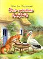
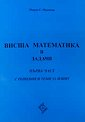
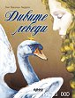
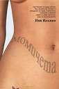

Най-Хубавите басни
Жан дьо Лафонтен
Пух
Цена
18.99 лв.

Висша математика в задачи - първа част(с решения и теми за изпит)
Марин С. Маринов
Софттрейд
Цена
10.00 лв.
Книгата съдържа над 380 задачи, структурирани в 55 теми, които могат да се ползват по дисциплината Висша математика - първа част
в техническия университет-София. Тя обхваща основните раздели по Алгебра(комплексни числа,...

Дивите лебеди
Дивите лебеди Ханс Кристиан Андерсен
Прес
Цена
4.50 лв.
Надали има дете. което да не знае нито една приказка от великия, големия, световния гений Ханс Кристиан андерсен. В тази книга ще откриете историята за Дивите лебеди, вълнувала въображението на милиони деца, поколения наред...

Момичета
Ник Келман
Intense
Цена
8.00 лв.
Ник Келман е добре образован млад човек (история, изкуство, когнитинни науки) и истински любител на книгите. Той твърди, че напълно споделя думите на Цицерон, че Стая без книги е като без душа
. Сред настолните му четива е Завръщане в...